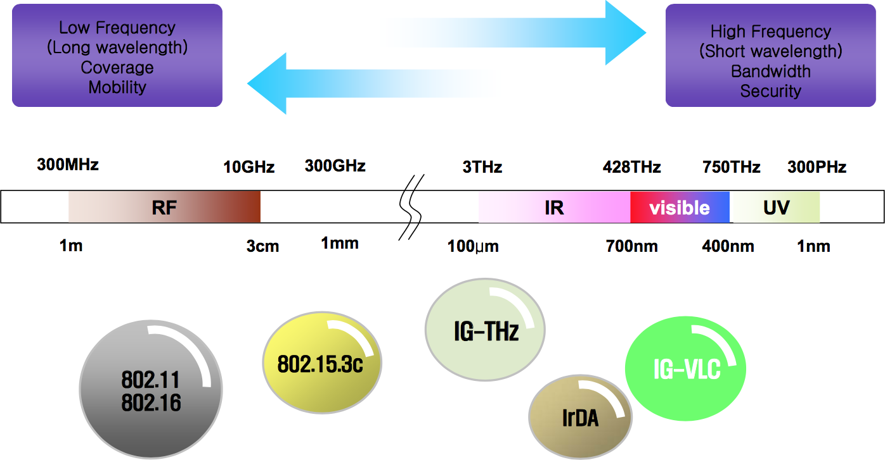
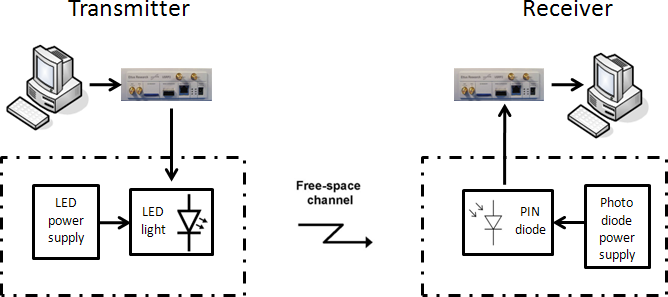
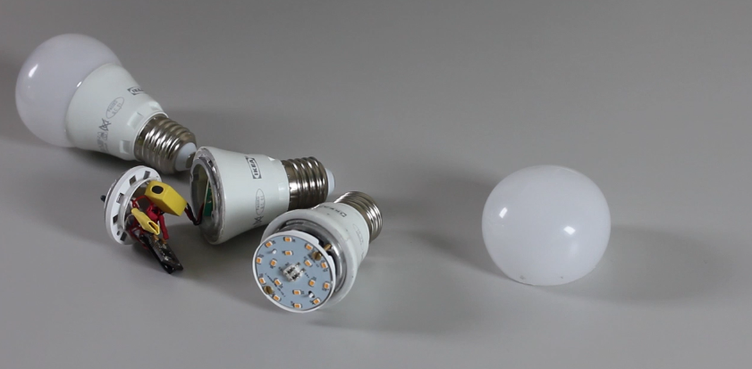
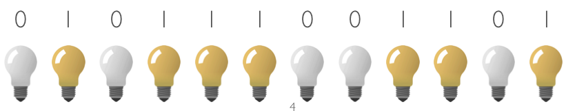
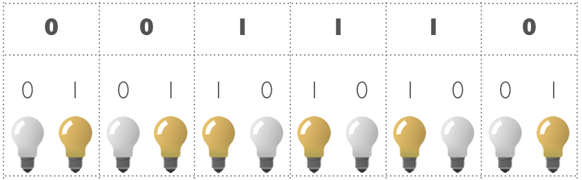
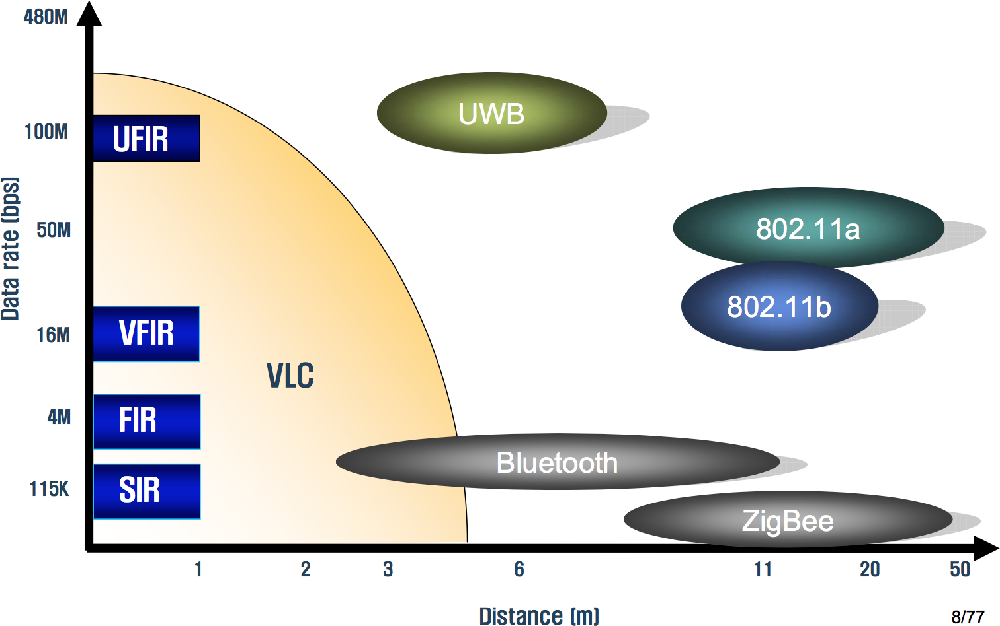

Définition
Selon Wikipedia:
Visible light communication (VLC) is a data communications variant which uses visible light between 400 and 800 THz (780–375 nm). VLC is a subset of optical wireless communications technologies.
C’est l’utilisation de la lumière visible comme support de l’information. Autrement dis, c’est l’utilisation d’ondes électromagnétiques à des fréquences entre 400 et 800THz pour transmettre de l’information.
En général, les systèmes de communications utilisent les radio fréquences (300MHz - 10GHz) comme le Wifi, le bluetooth, la 3G/4G, …

En fait, il s’agit plus précisément d’une modulation en amplitude d’une lumière visible. Le mode de fonctionnement d’un tel système de transmission de donnée est expliqué un peu plus bas.
Émetteur et Récepteur
Comme tout système de communication, il y a un émetteur et un récepteur (il y a un article plus détaillée sur les émetteurs et récepteurs).

Ici l’émetteur va généralement être une Diode électroluminescente (LED) pour diverses raisons qui sont expliqués dans un l’article émetteurs et récepteurs pour VLC.

Le récepteur va lui être une photodiode, bien qu’ils existent d’autres systèmes pour récupérer l’information lumineuse, par exemple pour les smartphone (voir article VLC et Smartphone).
Origines
Première apparition : conférence TED d’Harald Haas
Principe de fonctionnement
Comme expliqué précédemment, l’information va se transmettre par une modulation en amplitude d’un signal lumineux. Pour transmettre un 0, on va “éteindre” la LED, et pour transmettre un 1 on va “allumer” la LED. Ceci à très haute fréquence (de quelques kHz à GHz suivant les applications) afin d’avoir un débit important. A bien noter qu’à ces fréquences, les “clignotements” de la LED sont absolument invisible à l’œil nu.

Cependant, si l’on transmet les informations ce cette manière, la LED va s’allumer lorsqu’il y a transmission d’information et s éteindre lorsqu’il n’y a pas d’informations à transmettre. Ainsi l’intensité moyenne de la LED va dépendre de l’information transmise, ceci est problématique, et on règle ce problème en utilisant le codage Manchester.
Codage Manchester
Afin d’avoir une intensité moyenne qui soit constante quelque soit les données transférées, on utilise généralement un codage Manchester. L’idée est donc de “coder” un état haut en un état haut suivis d’un état bas, et de “coder” un état bas en un état bas suivis d’un état haut. Un exemple de codage Manchester est présenté ci dessous.

Comparaison avec d’autres systèmes de communication
Avant de passer à la présentation des différentes avantages et inconvénients d’utiliser la lumière comme support de l’information, il convient tout d’abord de comparer rapidement les débits et distances de communication que l’ont peut obtenir avec la communication par lumière visible avec les autres modes de communication.

La communication par lumière visible est donc une communication relativement courte distance, en effet les radio fréquences utilisés par les autres systèmes de communication permettent des distances de communication bien plus importantes.
Le débit obtenue en communication par lumière visible est très variable. Il est possible d’obtenir des débits très importants (plus de 10Gbps en laboratoire) mais également des débits plus faibles. Cette grande plage de débit va permettre diverses applications (voir l’article sur les applications du VLC).
Avantages
Sécurité
Le premier avantage et non des moindre et la sécurisation dans la transmission des données. En effet le flux de données n’est accessible que dans le “faisceaux direct” de lumière. Ainsi, le contrôle de la portée de l’information est très bon, contrairement aux systèmes de communication utilisant des radio fréquences.
Santé
Les études sur la nocivité des ondes électromagnétiques sur l’Homme sont nombreuses (voir le site de l’OMS), et aucune conclusion claire sur l’effet de ces ondes à long terme ne peut être fait. En tout cas, il y a de plus en plus une méfiance vis à vis de ces ondes, et l’utilisation de la lumière visible est une solution à cette méfiance.
Bande de fréquence utilisée
Tout d’abord la bande de fréquence utilisée est très grande, plus de 300THz (10000 fois supérieure à la bande RF) ce qui permet la transmission de nombreuses informations simultanément sur plusieurs bandes de fréquence. De plus il n’y a pas d’interférences avec les radio fréquences, donc un tel système est immunisé au brouillage électromagnétique ambiant donc le niveau moyen augmente chaque année et qui devrait augmenter d’autant plus avec l’arrivée de l’Internet des objets (voir article sur IEEE).
La non génération de radio fréquences est également un atout de taille pour l’utilisation dans des lieux où les contraintes sont fortes comme les Hôpitaux et ou les avions.
Finalement, cette bande de fréquence n’est pour l’instant pas régulée, son utilisation est donc gratuite.
Coût
Le coût de l’utilisation d’une telle technologie est relativement faible. En effet il ne suffit que d’une LED et d’un circuit de contrôle pour communiquer. Par exemple, pour les objets communicants où la contrainte de coût est forte, il peut être intéressant d’utiliser une LED plutôt qu’un module bluetooth qui est bien plus cher.
Inconvénients
Cette technologie présente cependant quelques inconvénients. Tout d’abord, la portée est faible, en effet n’importe quel obstacle suffi pour bloquer le signal.
Le signal va interférer avec la lumière extérieure, cet inconvénient peut être facilement résout en utilisant un filtre optique (passe bande réglé sur la longueur d’onde de la lumière utilisée) et un peu de traitement du signal.
Finalement, l’inconvénient le plus fort qui limite aujourd’hui l’utilisation massive de ce mode de communication est la difficulté à faire du bidirectionnel. En effet, pour un objet connecté, il va être relativement simple de recevoir de l’information d’une infrastructure grâce à une photodiode, par contre il va être plus compliqué de transmettre de l’information à l’aide d’une LED pour des raisons pratiques.